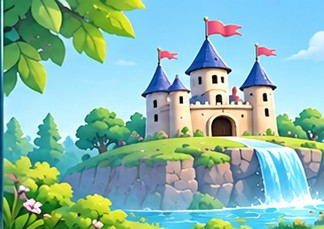
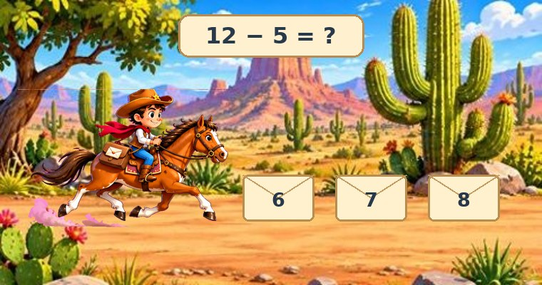
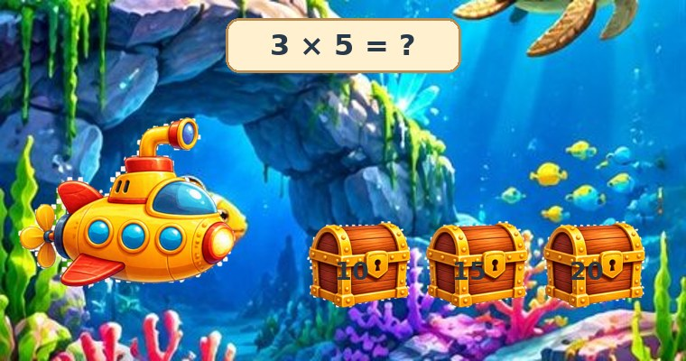
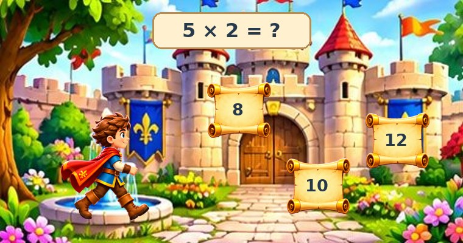
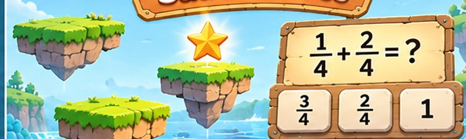
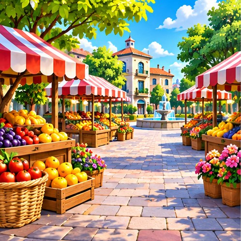
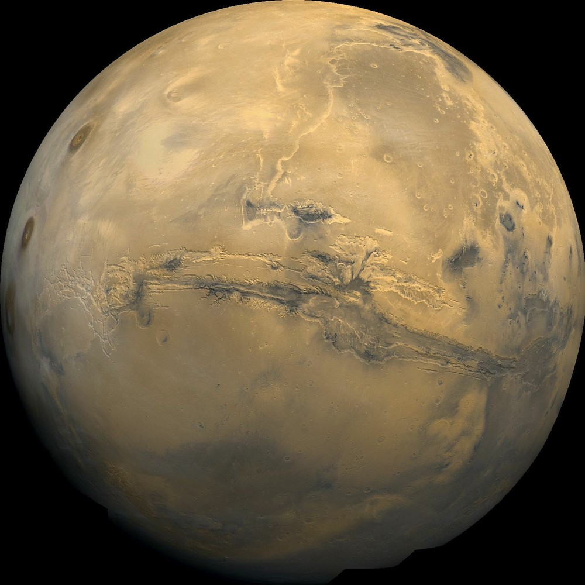

BIENVENUE DANS MATHJEUX
L’aventure des mathématiques commence ici !
Des calculs, des défis et des jeux pour progresser à ton rythme.

Découvre les aventures mathématiques

Math Express
Calculs et opérations
▶ Jouer
Math Océan
Multiplications et calculs
▶ Jouer
Le Château des nombres
Raisonnement et nombres
▶ Jouer
Saute-blocs
Fractions simples
▶ Jouer
Math City
Problèmes de la vie quotidienne
▶ Jouer
Mille et une pièces
Observation et logique
▶ Jouer